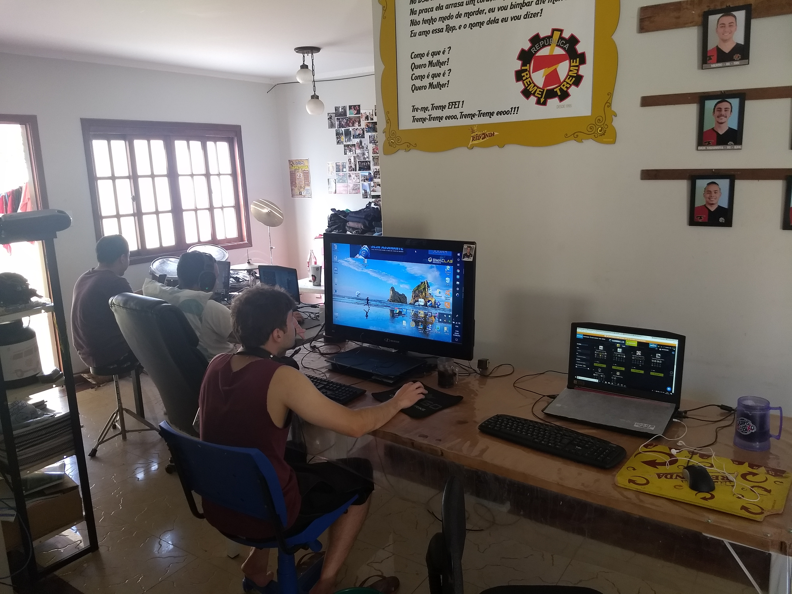

Torneio de CS: Counter Reps

No segundo semestre de 2018 a Atlética resolveu montar um campeonato de Counter-Strike: Global Offensive. O prêmio, se não me engano, eram 10 caixas de cerveja, então não podiamos deixar de tentar, mesmo com as chances mínimas. Como nós tínhamos quartos no segundo andar da casa, o sinal do roteador acabava por não pegar muito bem lá em cima, então decidimos montar uma lan house no andar debaixo, perto do roteador. Após juntarmos as mesas da casa e algumas cadeiras, acabamos montando uma espécie de lan-house, kkkkk. Quem olha a foto imagina se tratar de pessoas viciadas no jogo, quando na verdade a maioria nem sequer sabe movimentar o personagem, kkkkkkkkk. Acabamos por perder todas as partidas e sermos eliminados logo na primeira fase, mas fazer o quê? O importante é que foi engraçado.
← Voltar ao portfolio